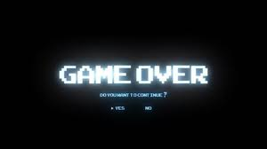

Цифрова смерть: що це таке та як до неї підготуватися?
Сучасна людина одночасно існує у двох реальностях – біологічній і цифровій. Коли вона помирає, то залишає частину своєї особистості в інтернеті та на власних девайсах – фото, відео, листування, нотатки, дописи та реакції у соцмережах тощо. Facebook, найпопулярніша соціальна мережа у світі, станом на другий квартал 2023 року налічувала понад 3 мільярди користувачів. Щодня близько 8 тисяч з них помирають. Якщо Facebook збереже темпи свого зростання, до кінця XXI століття кількість акаунтів мертвих у ньому може перевищити акаунти живих. Що трапляється з акаунтом після смерті власника? Чи зможуть родичі отримати його цифрові дані? Як влаштоване потойбічне життя у цифровому середовищі? Спробуймо розібратися!
Що таке цифрова смерть та цифрова спадщина?
Цифрова смерть – це смерть людини у цифровому світі, яка наступає разом із біологічною. Всі її цифрові активи складають цифрову спадщину.
Facebook пропонує користувачам два варіанти. Перший – перетворення акаунта на меморіал. Користувач може призначити спадкоємця, який надасть службі підтримки свідоцтво про його смерть або некролог. Тоді обліковий запис отримає помітку "Світла пам’ять".
Меморіальний статус дозволяє спадкоємцю:
- Публікувати пам’ятні дописи
- Змінювати аватарку
- Додавати нових друзів
Instagram своєю чергою не дозволяє обирати спадкоємця. Коли користувач помре, хтось із його близьких має документально підтвердити факт смерті.
Пам’ятний обліковий запис в Instagram ніби"заморожується": з’являється позначка "Світла пам’ять", зберігаються всі дописи, але рекомендувати його більше нікому не будуть. Доступ до керування меморіалом соцмережа не надає.
Потім служба підтримки запропонує два варіанти – видалити акаунт або перетворити його на меморіал.
I'm p
X (Twitter)
X (Twitter) дозволяє тільки видаляти бліковий запис померлого. Тому користувачам, які хочуть продовжити своє цифрове життя у цій соцмережі, мають потурбуватися про це самостійно. Саме так і зробив американський невролог Олівер Сакс. Перед смертю він передав особистий акаунт в X (Twitter) своїй команді. Завдяки цьому його стрічка продовжує оновлюватися й донині, хоча помер лікар ще у 2015 році.
Apple
В Apple існує функція "Цифрова спадщина". Для її активації користувач має обрати до п’яти спадкоємців, які отримають дані з його iCloud (фото, відео, нотатки, пошта, закладки із браузера тощо). Потім Apple згенерує ключ доступу. Отримати його спадкоємець зможе після того, як надасть свідоцтво про смерть користувача службі підтримки. Ключ буде дійсним протягом трьох років.
Google своїм користувачам пропонує функцію з іронічною назвою "Про всяк випадок". За допомогою неї також можна призначити своїх спадкоємців та обрати дані, котрі треба їм передати (враховуючи пошту). При налаштуванні функції треба зазначити період неактивності акаунта – від 3 до 18 місяців. Коли цей час сплине, сервіс відправить спадкоємцю обраний архів даних.
Потім Apple згенерує ключ доступу. Отримати його спадкоємець зможе після того, як надасть свідоцтво про смерть користувача службі підтримки. Ключ буде дійсним протягом трьох років.